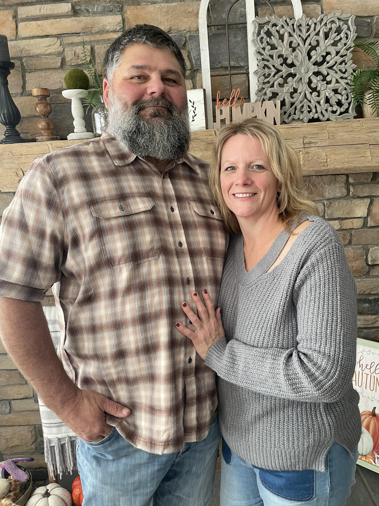

Our Story
From Lennon Café to the heart of Flushing.
Trackside Café is a true labor of love from Bill and Tammy — two lifelong Michiganders who brought their hearts and recipes from the beloved Lennon Café to Flushing. It’s a warm, family-first place where community and coffee meet every morning, and every plate carries the same care and laughter that built their first diner.
